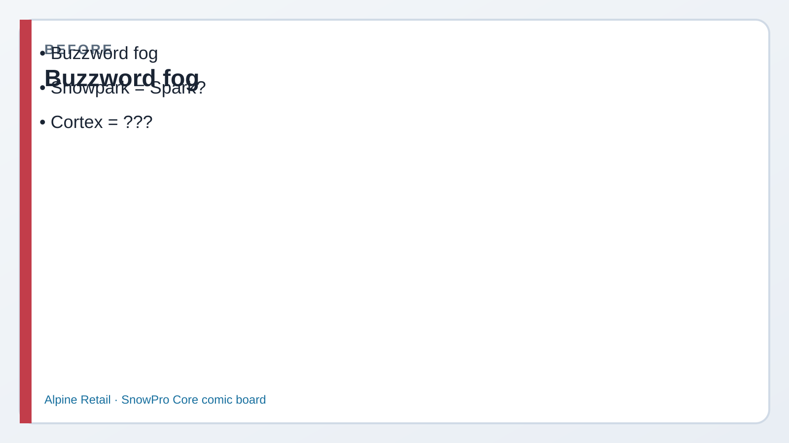
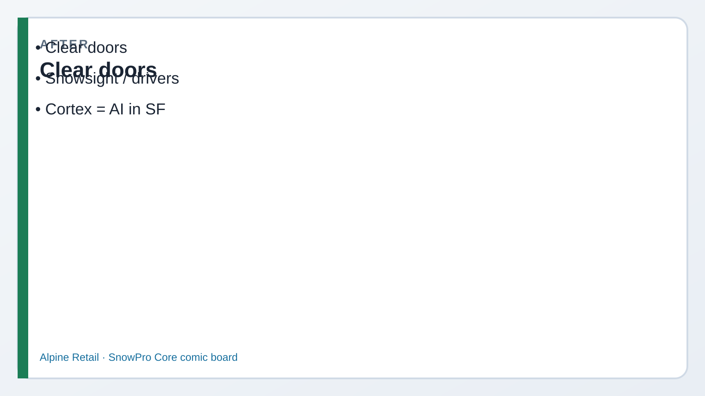

Read every Teach first section before you copy SQL.
Core asks which interface fits the job: browser, CLI, drivers, Snowpark, Notebooks, Streamlit,
and where Cortex fits vs an external LLM.
1
Picture first. Look at BEFORE/AFTER → read the comic → then run tiny SQL.
If a paragraph feels heavy, skip to the next comic strip — Dev explains it out loud for you.
Business problem
Kai only knows Snowsight worksheets. Riley wants Python near the data.
Morgan asks if we should ship customer text to a random public chatbot.
Solution you will build
Map the interface menu, run session SHOW/SELECT proofs, and learn optional Cortex calls
(commented — trials may lack privileges). Domain 1 architecture block closes here.

Before Buzzword fog.

After Snowsight · drivers · Cortex · Snowpark.
Episode 05 · Start here
Kai opens the browser. Riley opens Python.
KaiAnalyst — still learning
If Snowsight worksheets work, why does anyone install SnowSQL or drivers?
DevCoach — explains why
Same SQL engine, different doors. Browser for humans. CLI/scripts for automation. Drivers for apps. Snowpark when you want DataFrames that push work into Snowflake.
Morgan (later): don’t paste customer emails into an external LLM without a governance story.
See it — interface menu
Web
Snowsight
Browser UI: worksheets, dashboards, admin. What you’ve been using.
Click Run · see grids good for learning + ad-hoc
CLI
SnowSQL
Command-line client for scripts, PUT/GET, automation.
snowsql -c alpine CI / ops friendly
Apps
Drivers & connectors
JDBC/ODBC/Python… plus Spark/Kafka connectors for platforms.
App → driver → Snowflake same roles & WH
Code
Snowpark
DataFrame API (Python/Java/Scala) that executes lazily in Snowflake.
Use when pipelines fit DF not every SELECT needs it
Apps UI
Streamlit in Snowflake
Interactive apps hosted inside the account (SiS) — data stays close.
Runs in Snowflake not “your laptop only”
Explore
Notebooks
Interactive cells (SQL/Python) for exploration and documented analysis.
Teach / experiment shareable in-account
Cortex AI — in-account helpers
Cortex functions (e.g. SENTIMENT, COMPLETE) run as SQL in Snowflake when enabled.
That is different from copying data to an external LLM website. Trials often lack access — know the idea for the exam.
Cortex
Inside Snowflake
Governed with roles, warehouses, and account controls.
SNOWFLAKE.CORTEX.SENTIMENT(...)
External LLM
Outside the account
Data leaves unless you built a careful integration. Sam cares.
Public chatbot paste ≠ Cortex by default
Before Step 1
Same SQL, any door
RileyEngineer
If I run CURRENT_USER in SnowSQL vs Snowsight, do I get a different Snowflake?
DevCoach
Same account engine. Interface changes how you connect — not the three layers underneath.
1 Session proof (Snowsight or SnowSQL)
What this does: Prints identity and version — works from any SQL interface.
SQL · session context
USE ROLE ROLE_CORE_LAB_ADMIN;
USE WAREHOUSE WH_CORE_XS;
USE DATABASE ALPINE_RETAIL;
USE SCHEMA LAB;
SELECT CURRENT_USER() AS login_user,
CURRENT_ROLE() AS role,
CURRENT_WAREHOUSE() AS warehouse,
CURRENT_VERSION() AS snowflake_version;
✓ Your user, ROLE_CORE_LAB_ADMIN, WH_CORE_XS, a version string
Before Step 2
Snowpark vs SQL
KaiAnalyst
Should I rewrite every SELECT as Snowpark because it’s newer?
DevCoach
No. SQL for set-based questions. Snowpark when you need DataFrame/Python/Java pipelines that still push compute into Snowflake.
2 Catalog SHOW (interface-agnostic)
What this does: Confirms Alpine objects — same results in Snowsight or SnowSQL.
SQL · SHOW
SHOW WAREHOUSES LIKE 'WH_CORE%';
SHOW DATABASES LIKE 'ALPINE%';
SELECT 'interfaces ok' AS status,
COUNT(*) AS product_rows
FROM LAB.PRODUCTS;
If PRODUCTS is missing, re-run Lab 02 (or sql/02_objects.sql).
✓ Warehouse + DB listed; product_rows ≥ 0
Before Step 3
Sam vs public chatbots
SamCompliance
If Cortex isn’t enabled, do not paste customer emails into a random website “just to try sentiment.”
MorganManager
Agreed. For the exam, know Cortex lives in-account. For Alpine, wait for proper enablement.
3 Optional Cortex (may fail on trial)
What this does: Shows the SQL shape. Keep commented unless your account has Cortex.
SQL · Cortex (optional)
-- Uncomment only if Cortex is enabled:
-- SELECT SNOWFLAKE.CORTEX.SENTIMENT(
-- 'Alpine Retail had a great quarter'
-- ) AS sentiment;
-- SELECT SNOWFLAKE.CORTEX.COMPLETE(
-- 'snowflake-arctic',
-- 'Say hello to Priya in one short sentence.'
-- ) AS reply;
✓ You can describe SENTIMENT / COMPLETE even if the call errors on trial
Exam presses further — say these out loud
Q1. When Snowpark vs plain SQL?
Say: Use SQL for straightforward set-based queries. Use Snowpark when you want DataFrame/Python/Java/Scala logic that still executes inside Snowflake — not because “new is always better.”
Q2. Cortex vs external LLM?
Say: Cortex functions run in the Snowflake account under platform governance. An external LLM usually means data leaves unless you built a controlled integration. Exam: don’t equate “any AI” with Cortex.
Q3. Where does Streamlit in Snowflake run?
Say: The Streamlit app is hosted in Snowflake (SiS) — close to the data — not merely a local laptop demo disconnected from the account.
Q4. Snowsight vs SnowSQL — same engine?
Say: Yes. Different clients to the same account. Choose UI for interactive work, CLI for scripting/PUT-GET/automation.
Q5. Do Notebooks replace warehouses?
Say: No. Notebooks are an interface / workspace. Queries still need a virtual warehouse (compute) and still read from storage.
Priya’s wrap-up (say this out loud)
“I can reach Alpine through Snowsight, SnowSQL, drivers, connectors, Snowpark, Notebooks, and Streamlit in Snowflake —
same account, different doors. Snowpark for DataFrame pipelines; SQL for set questions.
Cortex is in-account AI; external LLMs are a different governance story. Streamlit SiS runs inside Snowflake.”
Next
Domain 2 starts at Lab 06 (security / RBAC). Skim EXAM_TIPS_DOMAIN1.md tonight.